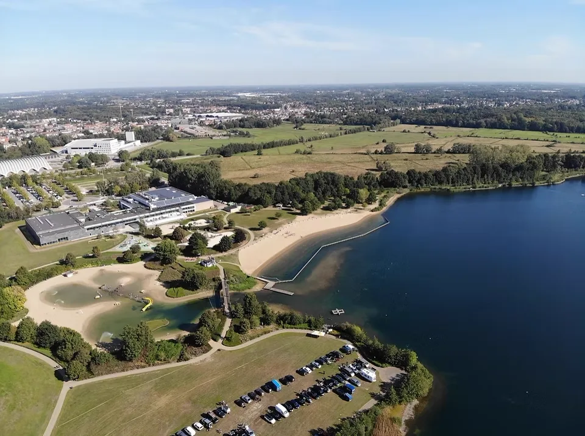

Brevetten 1* tot 4*
Van 1*-duiker (tot 20 m) tot 4*-duiker, het hoogste duikersniveau.
Alle brevetten →Al 60 jaar een begrip. Leer duiken in het zwembad, duik in De Nekker en reis mee naar de Oosterschelde en de Medes-eilanden. Je duikt nooit alleen.
WVM staat voor Watersport Vereniging Mechelen. In 2023 vierden we ons 60-jarig bestaan.
Neptunus is aangesloten bij Nelos, de Vlaamse duikliga, en bij CMAS. Onze instructeurs hebben diploma’s erkend door Sport Vlaanderen. Veiligheid staat voorop: via zwembadtraining, evaluaties en duidelijke regels leer je stap voor stap veilig duiken.


Een ervaren peter begeleidt je bij je eerste duiken, van 1*-duiker tot instructeur.
Dinsdag 20u30–22u00 en vrijdag 21u00–22u00, Nekkerspoel-Borcht 19, 2800 Mechelen. Gratis initiatie voor nieuwkomers.
Route plannenZondag omstreeks 10u00, woensdag 14u00–17u00 en donderdag 20u00. Onze thuisbasis in Mechelen.
Over De Nekker
Een clubduik om de twee weken van mei tot oktober, en elke woensdagavond in juli en augustus.
Over de Oosterschelde
Jaarlijkse duikreis naar de Medes-eilanden. Ook reizen naar Schotland, Ierland, Noorwegen, de Maldiven en Egypte.
Bekijk de agenda
Van 1*-duiker (tot 20 m) tot 4*-duiker, het hoogste duikersniveau.
Alle brevetten →Instructeur- en technische opleidingen. Onze instructeurs staan klaar van start tot instructeur.
Instructeur →Steengroeves, Oosterschelde en reizen naar Spanje, Egypte, Maldiven en meer.
Duikstekken →Kom gratis proberen of bel Jan Pacqué op 0479/99.75.03.